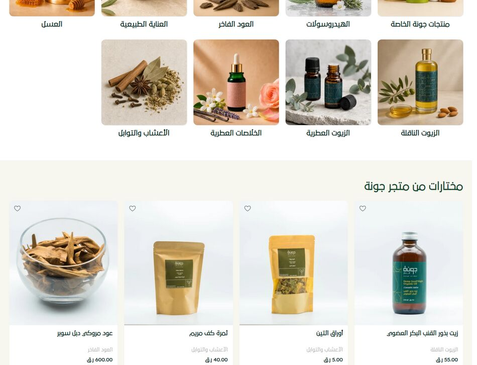
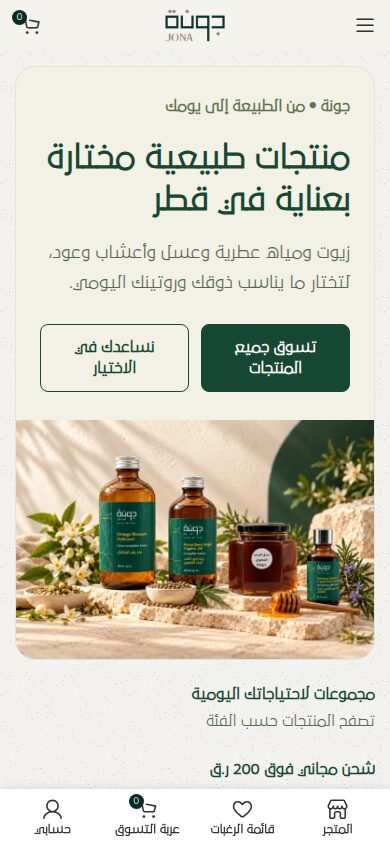
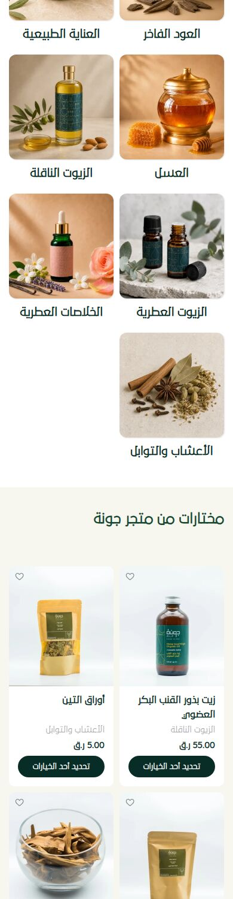

Website & Aesthetic Audit · October 2026
6/10Overall
jona.qa
where nature
meets luxury?
A visual review of the Jona Natural Products homepage, covering brand, typography, imagery, layout, mobile, accessibility and polish, with a prioritised plan to make it feel truly premium.
جونة للمنتجات الطبيعية — حيث تلتقي الطبيعة بالفخامة
01 · Executive summary
A strong foundation, held back by small inconsistencies
The palette is a deep forest green and warm cream that suits a premium natural-products brand. Packaging photography is consistent, and the homepage tells a clear story: discover, browse, learn, reassure. Right-to-left layout is handled properly throughout.
What keeps the site from feeling truly luxurious is a set of small, fixable details: synthesized bold headings, two clashing photography styles, orphaned grid tiles, uneven product cards, a clip-art avatar and leftover theme-demo content. Most fixes are low effort.
Scorecard
Brand & colour
8Strong, coherent green/cream. One off-palette dusty-rose pill.
Typography
5One font file, faux-bold headings, 17 font sizes.
Imagery & photography
6Beautiful lifestyle scenes clash with cool grey studio packshots. Some images are reused.
Layout, grid & spacing
6Clean sections and generous whitespace, but orphan tiles and uneven cards.
Mobile experience
6Usable, but hero CTAs wrap and cards are dominated by heavy buttons.
Accessibility (visual)
5Low-contrast meta text, pinch-zoom disabled, missing alt text.
Polish & consistency
5Demo leftovers, clip-art avatar, mixed text alignment.
Performance (perceived)
5About 191 requests (81 CSS, 66 JS) and about 4.6 MB on desktop.
6/10A good foundation that needs one focused polish pass. Five of the top six fixes take under a day each.
jona.qa · Aesthetic Audit2
02 · Brand & colour
A restrained, on-brand palette with one stray accent
Colours below were extracted from the live page's computed styles, ranked by how often they appear.
Olive#596854 · body accent
Dusty rose#A4847C off-palette
What works
- Forest green on cream has a 13.5:1 contrast ratio. It is elegant and very readable.
- Alternating cream and white section backgrounds create a calm, editorial rhythm.
- Green is used consistently for text, primary buttons, badges and the footer.
Issues
- The free-shipping pill uses dusty rose, which appears nowhere else. White 11px text on it has only 3.4:1 contrast, which fails WCAG AA.Use forest green, or adopt a muted gold as an official accent.
- The sale red
#E01020 is harsh against the earthy tones, and the −8% badge already uses green.Pick one discount colour.
- The footer logo sits in a pale box on dark green and looks pasted on.Use a cream knockout logo.
Header & footer details
Busy three-row header with the off-palette rose pill (top left) and the clip-art call-centre avatar (top right).
jona.qa · Aesthetic Audit3
03 · Typography
A distinctive typeface, rendered with fake bold
29LT Bukra is a modern Arabic typeface that suits the brand. But only 29LT-Bukra-Regular.woff is loaded, and every heading asks for weight 700. The browser therefore synthesizes the bold, which looks smudgy and uneven on Arabic letterforms, most noticeably in the 42px hero headline.
Font sizes in use (desktop)
11121313.51414.251516171819.5202428303242
17 distinct sizes. Section headings (rose) alternate between 28, 30 and 32px for no clear reason.
Issues
- Faux bold on every heading, because only the Regular weight is loaded.
- Fragmented scale: 17 sizes, with section H2s set at 32, 30 and 28px.
- Inverted hierarchy: the hero feature H3s are 14px, smaller than the 17px product-name H3s.
- Mixed alignment: guide cards are centre-aligned while every other section is right-aligned.
- The font is legacy WOFF (37 KB) with no preload.
Recommended
- Self-host Bukra Bold (plus Light or Medium) as WOFF2, and preload the primary weight.
- Adopt one scale:
12 · 14 · 16 · 20 · 24 · 32 · 44.
- Make every section H2 the same size (32px).
- Right-align guide cards to match the rest of the RTL layout.
Sample headline, currently rendered in synthesized bold: منتجات طبيعية مختارة بعناية في قطر
jona.qa · Aesthetic Audit4
04 · Imagery & photography
Two photographic worlds on one page

Warm, sunlit category scenes (top) sit directly above cool, grey-gradient studio packshots (bottom). Note the uneven product image heights and the empty slot in the category grid.
What works
- The hero and category photography is warm and aspirational: stone, botanicals, honey dippers.
- Jona's packaging is consistent (green labels, kraft pouches) and builds recognition.
Issues
- The colour temperature jumps from warm lifestyle shots to cool grey packshots.Re-grade or re-shoot packshots on warm cream (#F5F3EE).
- Uneven framing: product images vary in height, and some leave a white strip.Enforce 1:1 or 4:5 frames with the product filling about 70%.
- The orange-blossom scene is used three times (hero, feature card, blog).
- The clip-art avatar in the top bar feels off-brand.Replace it with a line icon or a real team photo.
jona.qa · Aesthetic Audit5
05 · Layout & mobile
Clean sections, but the grid and mobile need care

Mobile hero: both CTAs wrap onto two lines, and the "0" badge overlaps the cart icon.

A lone 9th category tile, followed by heavy dark "Select options" buttons on every card.
Layout
- Orphan tile: 9 categories in 5-column (desktop) and 2-column (mobile) grids.Use a 3×3 grid, or add an "All products" tile.
- The "Discover more" cards are unbalanced: one has an image and one is text only.
- The three-row header with a 10-item navigation feels busy.
- Section links are inconsistent: some have an arrow (←) and some don't.
Mobile
- Hero CTAs wrap.Stack them full width, or shorten them to "تسوق الآن".
- 8 identical dark buttons outweigh the products.Use an outline or "+" icon button, or make the whole card tappable.
- Hide the cart badge when it shows 0.
- 35 tap targets are smaller than 32px.
jona.qa · Aesthetic Audit6
06 · Accessibility, polish & performance
The details that signal quality
| Check | Result | Recommendation |
|---|
| Body text, green on white/cream | ✓ 13.5–15:1 | Keep |
Grey category text #A5A5A5 | ✕ 2.46:1 | Use olive #596854 (5.9:1) |
| White on dusty-rose pill, 11px | ✕ 3.4:1 | Green background, 12px or larger |
| Pinch-zoom | ✕ Disabled | Remove user-scalable=no |
| Image alt text | ! 23 of 30 missing | Add alt text to the logo and category images |
| Icon-only links without a label | ! 7 | Add aria-label |
| Meta description and Open Graph tags | ✕ None | Add og:image for WhatsApp/Instagram sharing |
| Theme-demo leftovers | ! Present | Rename /en/home-furniture2-english/ and give the EN page an English title |
Page weight (desktop, sandbox measurement)
191requests
81stylesheets
4.6 MBtransferred
~6.6 sload event
- Combine and defer CSS/JS (LiteSpeed Cache on Hostinger), and disable unused Woodmart and Elementor modules.
- Oversized images: the logo is a 1439px PNG shown at 197px, and blog images are 1024px shown at 336px.Use SVG for the logo, and correctly sized WebP/AVIF for photos.
These timings come from a sandboxed cloud browser and are indicative only. Confirm them with PageSpeed Insights.
jona.qa · Aesthetic Audit7
07 · Action plan
Eleven fixes, ranked by impact
| # | Fix | Impact | Effort |
|---|
| 01 | Load the real Bukra Bold in WOFF2 to end faux-bold headings | High | Low |
| 02 | Put packshots on a warm cream backdrop and use one aspect ratio | High | Med |
| 03 | Fix the category grid orphan (3×3 grid, or an "All products" tile) | Med | Low |
| 04 | Darken the grey meta text and recolour the promo pill | Med | Low |
| 05 | Replace the clip-art avatar and use a knockout footer logo | Med | Low |
| 06 | Mobile: stack the hero CTAs, lighten the card buttons, hide the "0" badge | Med | Low |
| 07 | Consolidate the type scale and right-align the guide cards | Med | Low |
| 08 | Add a meta description and Open Graph image | Med | Low |
| 09 | Remove demo leftovers and fix the English page title | Low | Low |
| 10 | Re-enable pinch-zoom and add alt text | Med | Low |
| 11 | Combine/defer CSS and JS, and resize the logo and blog images | Med | Med |
Methodology & caveats
The homepage was rendered in headless Chromium at 1440px and 390px widths. Computed styles (fonts, colours, sizes, headings, buttons, images) were extracted, and contrast was calculated with the WCAG 2.x formula.
The audit environment's network proxy blocked a few third-party resources: Tawk.to chat, the Hostinger Reach embed and the payment-method icons. These likely load normally for visitors and are not counted as defects.
Scope: Arabic homepage only. Product, category, cart and checkout pages were not reviewed.
jona.qa · Aesthetic Audit8